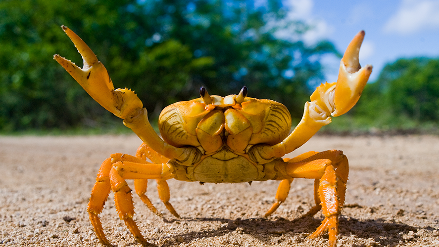

This is a console based application that allows to you adopt a Organic or Cyborg type crab. Each
crab have
health,
hunger, and boredom that ticks on each action. You can also take the crab to the Vet to get treated and play
with
them like making them do backflips.


This is a console based application that shows a roster of a hospital and a patient. The application tells you a
story of the patient getting sick with coronavirus and being sent to isolation and treated. In result the staff
gets paid.